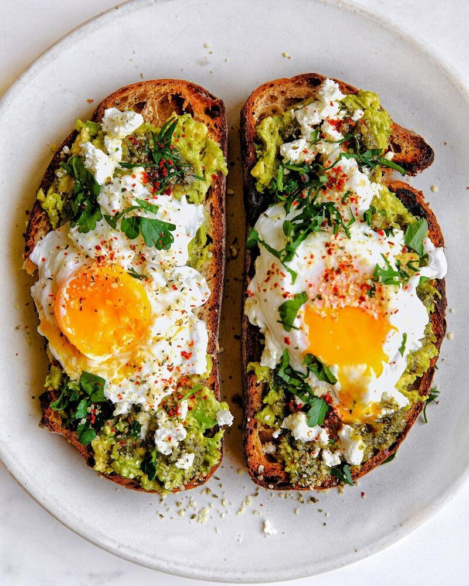

Avocado Toast with Poached Eggs
Ingredients
- 2 slices sourdough bread
- 1 ripe avocado (mashed)
- 2 eggs
- 1 tablespoon white vinegar
- Salt and pepper to taste
- Red pepper flakes (optional)
- Fresh herbs (optional)
0:00
0:00
Toast the bread until crispy.
Mash the avocado with salt and pepper.
Poach the eggs in water with vinegar.
Spread avocado on toast, top with poached egg, and sprinkle with herbs and red pepper flakes.